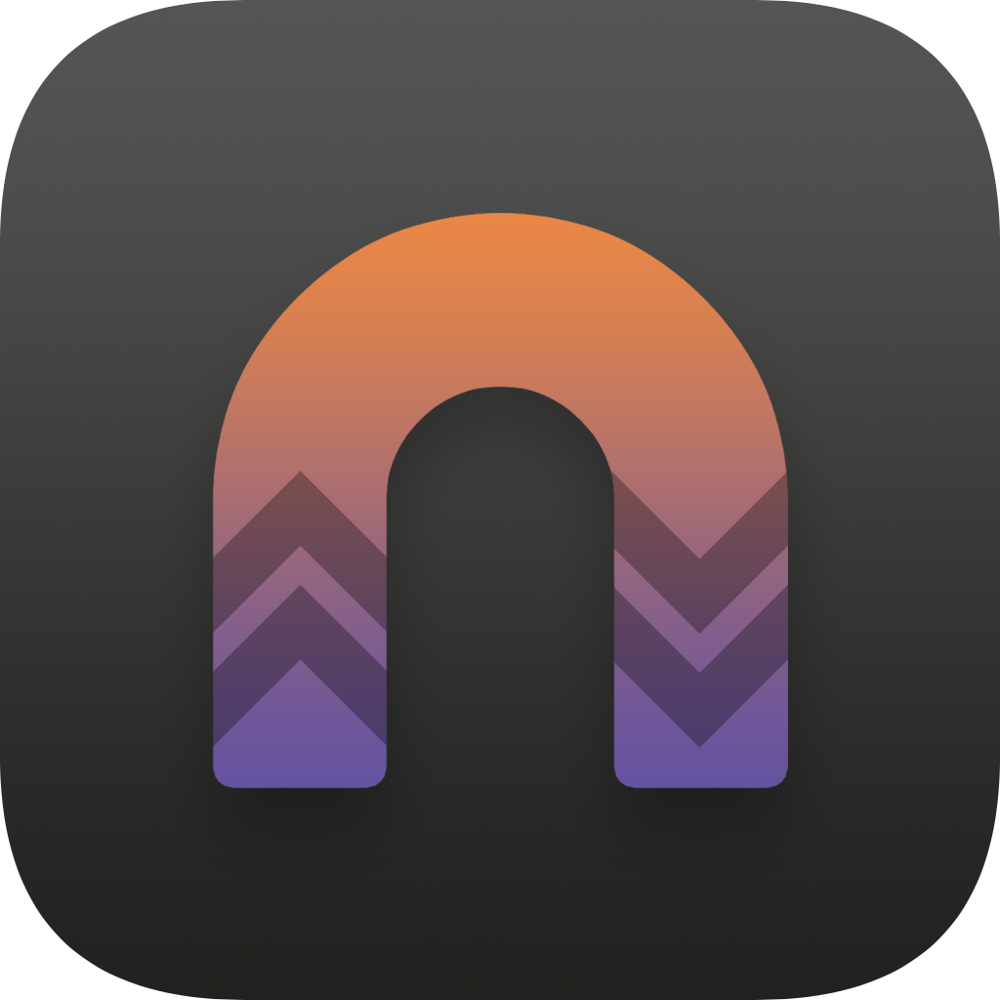

 Nicho1asdev's repo
Nicho1asdev's
jailbreak repository.
Add to Cydia
Add to Zebra
Add to Sileo
Add to Installer
Featured Packages
Konban for iOS 13
Replaces the "Today" view with an app of your choice. Originally made by Nepeta. Rewritten for iOS 13 by nicho1asdev.
More info
noNotch
Updated for iOS 13 and arm64e by nicho1asdev, originally made by jakeashacks. Hides the notch on iPhone X and above. Issues are present. Source code: https://github.com/jakeajames/noNotch.
More info
ZebraSourceFix
Stop Zebra from hijacking Cydia and Sileo open requests!
More info